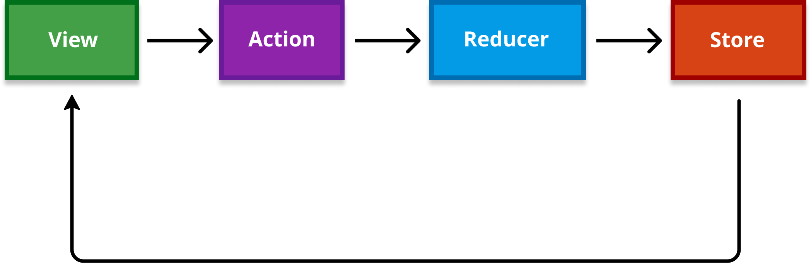
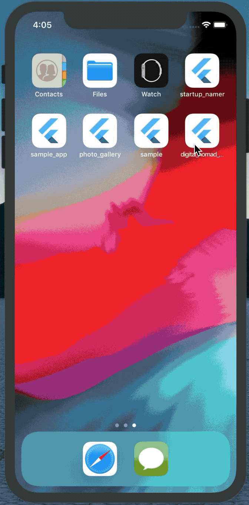
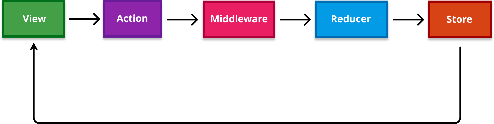

Flutter - Testable architecture using Redux
Architecture concepts are often common across platforms. Let’s learn how to build an end to end architecture for Flutter using Redux. Our main focus will be testability. ✅
Unidireccional data flow
This is something we’ve heard many times already, so let me point very rapidly the key points of an architecture like Redux which implements this pattern. The most basic diagram for Redux might look like this:

Let’s go briefly over all the pieces:
- View: The rendering side of the program. Our Widget tree in Flutter. It dispatches actions on start or as the result of user interactions.
- Action: The intent of changing state. Usually called after verbs that reflect that intent. E.g: UpdatePhotos, ToggleLoading, or even RouteToPhotoDetail. (Because why not? The current displayed screen could also be part of the app state)
- Reducer: Reducers are pure functions with the following type declaration:
AppState appReducer(AppState state, action). They take the current app state and an action, apply the changes required by the action and return a new app state. - Store: Where the app state is. The state generated by reducers is stored here. A state change in the
Storetriggers aViewredraw. So theWidgetsdirectly affected by the change will redraw themselves to match the new state.
As you can see, data flows in a single direction. On top of that, I’d like to remark the following details from a holistic point of view:
- The app has a single source of truth, the state. That doesn’t mean you can’t compose that state for better concern separation, e.g: having one substate per screen, or split view and app state. The important bit here is that the state is composed and unique, so we can render our app at any point in time just by feeding it a current snapshot of the state.
- Having state as a single source of truth allows you to serialize it, send it over network and restore it in a different machine, which allows you to reproduce any app state for debugging purposes, shortcut development workflows, share development scenarios with your team mates, and much more.
- State is immutable. It goes from a previous state to a new state through reducers and actions as described above. State is replaced by the new one, never mutated. That’s key so we can ensure the only state change occurring in the app is done by the reducers.
- Immutable state allows us to compare different snaphots of the state for optimizing the rendering phase (you don’t need to render again a Widget when its state remains unchanged).
- It usually comes handy to override
toString()in the state, so you can easily log it during development, or send it to a tracking system. - In some not statically typed languages, actions carry a
typefield or property to determine their intent. Given we’ve got classes here we can just reflect that intent by the action class name. - Actions can contain a payload as the required data to perform a state change. So the reducer gets an action, extracts the payload and uses it to perform the required state update.
- Actions are also immutable.
- When we say “reducers are pure functions”, we mean they just take their input arguments (current app state + action) and generate a new app state. They don’t try to access anything in the external world.
- It’s recommendable to split and compose reducers, so your global reducer is a composition of minor reducers intentionally segregated to cover different domain areas or different parts of the state tree.
- If you are able to log / serialize / persist / track actions and state, then you’re literally able to reproduce how users get to a given scenario, since any app state is the result of the initial app state plus all the actions applied on top of it. In other words, you can fast forward state, rewind state, or reproduce any state snapshot.
- When state is immutable and state changes work like a state machine, your program becomes deterministic. That means you can reason about it in a considerably easier way.
- When state is deterministic you can create advanced tooling for developers that leverages app state inspection hence debugging capabilities.
Let’s come back down to earth and jump into a practical example now.
Wallpapers app
We will code a very simple app for the sake of the example. We essentially want to load a bunch of wallpapers from a service and show a loader in the meantime, like this:

So this screen will have 2 different states: A list of photos and a boolean determining whether the view is loading or not.
@immutable
class AppState {
final List<Photo> photos;
final bool isPhotosListLoading;
const AppState({@required this.photos, @required this.isPhotosListLoading});
@override
String toString() {
return 'AppState: {photos: $photos}, {isPhotosListLoading: $isPhotosListLoading}';
}
@override
bool operator ==(Object other) =>
identical(this, other) ||
other is AppState &&
runtimeType == other.runtimeType &&
ListEquality().equals(photos, other.photos) &&
isPhotosListLoading == other.isPhotosListLoading;
@override
int get hashCode => photos.hashCode ^ isPhotosListLoading.hashCode;
}
We are also overriding == (equals) and hashCode. Equality will be required when we need to compare states to avoid rendering again when the state has not changed.
Now let’s create our reducers. For this we’ll need to add the redux.dart package to our pubspec.yaml. This package will bring the basic Redux features we need to implement our architecture.
Our appReducer is going to be a composition of two different reducers.
AppState appReducer(AppState state, action) {
return AppState(
photos: photosReducer(state.photos, action),
isPhotosListLoading: photosListViewStateReducer(state.isPhotosListLoading, action));
}
The photosReducer will handle state changes for updating the photos in the AppState. It essentially gets the new photos list passed by the action and replaces the old one in the Store. We are being intentionally simple here. Here’s how it looks like:
final photosReducer =
TypedReducer<List<Photo>, UpdatePhotosAction>(_updatePhotosReducer);
List<Photo> _updatePhotosReducer(List<Photo> state, UpdatePhotosAction action) {
return action.photos;
}
Note that we use TypedReducer from redux.dart package. TypedReducer binds a state change to a given action type, so we can avoid the boilerplate for comparing action types by ourselves. Without this, we would need to have a big switch case where we would compare the action.runtimeType with each one of the action types to trigger the proper reducers when required.
We need to pass a function reference (in this case __updatePhotosReducer) to call every time an UpdatePhotosAction arrives.
In the other hand, we have a photosListViewStateReducer that will respond to the TogglePhotosListLoadingAction for updating the toggle state. The action will pass the new value for it:
final photosListViewStateReducer =
TypedReducer<bool, TogglePhotosListLoadingAction>(_togglePhotosListLoading);
bool _togglePhotosListLoading(bool state, TogglePhotosListLoadingAction action) {
return action.isLoading;
}
This is probably a really simple state segregation approach. You could do it in the way that better matches your needs. In this case I am separating what we could consider app state (photos) from view state (isPhotosListLoading).
If we had more widgets on screen, or multiple screens, we would most likely combine different reducers for the view state for example. You’ve got combineReducers method for that in the redux.dart package.
Logics for reducing a single state can be combined. As a very brief parenthesis, let’s say we had a more complex scenario where we needed separate logics for adding or removing photos to/from the list state in the Store. We could use combineReducers and TypedReducer for achieving our goal with just a few lines! 👌
Reducer<List<Photo>> photosListViewStateReducer = combineReducers<List<Photo>>([
new TypedReducer<List<String>, AddPhotoAction>(addItemReducer),
new TypedReducer<List<String>, RemovePhotoAction>(removeItemReducer),
]);
Our state will be reduced by any of those reducers, depending on the action that arrives. TypedReducers will do the magic.
Now getting back to our example, we got a way to reduce any state changes for both UpdatePhotosAction and TogglePhotosListLoadingAction, but what about the actual actions items? We still didn’t have a look to those. Well, they’re indeed very simple.
class TogglePhotosListLoadingAction {
final bool isLoading;
const TogglePhotosListLoadingAction({this.isLoading});
}
class UpdatePhotosAction {
final List<Photo> photos;
const UpdatePhotosAction({this.photos});
}
Both actions reflect the need for a state change and carry some payload for it.
But there’s still an issue. Up to this point we are able to show / hide a loader and show a list of photos by updating it’s state. But who’s actually fetching the photos?
That’s where a package like redux_thunk comes into play. It integrates itself perfectly with redux.dart, and it essentially allows you to write asynchronous actions. This will considerably simplify our architecture, since we’ll have our actions atomic and as totally swappable items, no matter whether they’re sync or async.
Let’s say we’ve got a PhotosRepository that abstracts the source of the data in an asynchronous way, so it returns a Future<List<Photo>>. We could write a ThunkAction (asynchronous action) like the following:
ThunkAction<AppState> fetchPhotosAction(PhotosRepository repo) {
return (store) {
store.dispatch(new TogglePhotosListLoadingAction(isLoading: true));
repo.getPhotos().then((photos) {
store.dispatch(new TogglePhotosListLoadingAction(isLoading: false));
store.dispatch(new UpdatePhotosAction(photos: photos));
}).catchError((exception) => throw Exception(exception));
};
}
These actions work as higher order actions since they dispatch simpler actions inside. In this case we dispatch a TogglePhotosListLoadingAction to set the loading state to true, then we fetch the photos and whenever that’s complete (using .then combinator) we dispatch TogglePhotosListLoadingAction to set the loading state to false, and UpdatePhotosAction to store the fresh photos state.
That would complete our architecture, and one of the only still missing pieces would be to connect the dots in the entry point of our app. Here’s the main function:
void main() {
final store = Store<AppState>(appReducer,
initialState: AppState(photos: List(), isPhotosListLoading: false),
middleware: [
new LoggingMiddleware.printer(),
thunkMiddleware
]);
runApp(StoreProvider(store: store, child: DigitalNomadApp()));
}
We just need to create our Store for the AppState, pass in our appReducer (that’s the root reducer, a combination of all reducers mentioned earlier), an initial value for the state, and some optional middlewares. Yep, Middleware is a new piece here we didn’t mention before!
Middleware actually lives in between the actions and the reducers and it’s used for shortcutting some behaviours for all actions.
E.g: We can use a logging middleware so we log all actions that come in and can easily follow state changes during development, or a thunkMiddleware for being able to dispatch both sync and async actions transparently so the View doesn’t need to worry about the differentiation between the two. That’s actually a powerful feature.
Here is how the diagram will look now after adding the Middleware:

Final touches: Let’s connect our View so it dispatches any required actions (either on init or on user interaction), and also automatically reacts to any changes in the AppState. That will close the cycle and complete our end to end architecture.
class DigitalNomadApp extends StatelessWidget {
@override
Widget build(BuildContext context) {
return MaterialApp(
title: 'Digital Nomad Wallpapers',
theme: ThemeData(
primarySwatch: Colors.blue,
),
home: PhotoList(),
);
}
}
class PhotoList extends StatefulWidget {
@override
_PhotoListState createState() => _PhotoListState();
}
class _PhotoListState extends State<PhotoList> {
@override
Widget build(BuildContext context) {
return Scaffold(
appBar: AppBar(
title: Text("Digital Nomad Wallpapers"),
),
backgroundColor: Colors.black,
body: StoreConnector<AppState, bool>(
converter: (store) => store.state.isPhotosListLoading,
onInit: (store) {
store.dispatch(fetchPhotosAction());
},
distinct: true,
builder: (_, isLoading) {
return isLoading
? Center(
child: CircularProgressIndicator(),
)
: Padding(
padding: EdgeInsets.all(2.0),
child: StoreConnector<AppState, List<Photo>>(
converter: (store) => store.state.photos,
builder: (_, photos) {
return GridView.builder(
itemCount: photos.length,
itemBuilder: (BuildContext context, int index) {
final photoUrl = photos[index].portrait;
return Padding(
padding: EdgeInsets.all(1.0),
child: new Image.network(
photoUrl,
fit: BoxFit.cover,
),
);
},
gridDelegate:
SliverGridDelegateWithFixedCrossAxisCount(
crossAxisCount: 3, childAspectRatio: 0.6),
);
},
));
}));
}
Note how the app looks pretty standard, except for one thing. We’re using some StoreConnector widgets there. That’s where the View connects to the Store to read from it or dispatch actions to it. It has some key parameters:
converter: This is just a standard mapper that maps from the store to the actual state we’re interested in at that level. If we have a connector with the typesStoreConnector<AppState, bool>like the root one, we’ll map from the store to a boolean value. We’ll use that one to read the loading state.init: Used to dispatch any actions that don’t rely on user interaction but need to happen at start, like the one to fetch the list of photos.distinctis a clever guy here. It will make the view render again (react to state changes) just when the mapped state has changed from last time. That’s why we needed to override==(equals) in ourAppStatein the beginning! 💡builder: A plain widget builder that gives you access to the state being listened so you can render your current view using that state snapshot.
There’s an inner StoreConnector for the photos list, let’s extract it for clarity:
StoreConnector<AppState, List<Photo>>(
converter: (store) => store.state.photos,
builder: (_, photos) {
return GridView.builder(
itemCount: photos.length,
itemBuilder: (BuildContext context, int index) {
final photoUrl = photos[index].portrait;
return Padding(
padding: EdgeInsets.all(1.0),
child: new Image.network(
photoUrl,
fit: BoxFit.cover,
),
);
},
gridDelegate:
SliverGridDelegateWithFixedCrossAxisCount(
crossAxisCount: 3, childAspectRatio: 0.6),
);
},
));
On this one we map from the store to List<Photo> in the converter. We want to listen to that state from our widget builder so we can conveniently render our photos list, which is actually going to be a Grid!
Et voilà! we got our app up and running. Let’s dive into how testable it is now. 🤔
Testing
In the beginning we said we’d focus on testability, so let’s dive into it very rapidly.
In Flutter it’s very usual to write black box end to end tests that cover your complete architecture. These tests are powerful if you have a proper architecture in place, since they’re not very tied to the implementation, hence you can safely refactor your production code without the need to update your tests every single time.
This is how functional test for the loading state could look like. We use flutter_test package for it:
void main() {
testWidgets('Show loading when building DigitalNomadApp', (WidgetTester tester) async {
final store = Store<AppState>(appReducer,
initialState: AppState(photos: List(), isPhotosListLoading: false),
middleware: [
new LoggingMiddleware.printer(),
thunkMiddleware
]);
await tester.pumpWidget(StoreProvider(store: store, child: DigitalNomadApp()));
// Verify that progress indicator widget is attached
expect(find.byType(CircularProgressIndicator().runtimeType), findsOneWidget);
});
}
You setup your store, request your app widget to render (test.pumpWidget()) and assert over the final state. flutter_test provides all the utilities and matchers you could need to match over view state. If you’ve done Android, they’re very similar to the ones you can find in Espresso.
But our architecture has a problem. There’s a network request we’d not want to perform in our tests, so they are properly isolated and non flaky. If we look back, we were doing that in our async action to fetch the photos:
ThunkAction<AppState> fetchPhotosAction(PhotosRepository repo) {
return (store) {
store.dispatch(new TogglePhotosListLoadingAction(isLoading: true));
repo.getPhotos().then((photos) {
store.dispatch(new TogglePhotosListLoadingAction(isLoading: false));
store.dispatch(new UpdatePhotosAction(photos: photos));
}).catchError((exception) => throw Exception(exception));
};
}
Here, we get the PhotosRepository as a dependency and use it to fetch the photos. Let’s take a look at the internals of the repo for the first time:
class PhotosRepository {
const PhotosRepository({this.apiClient});
final PhotosApiClient apiClient;
Future<List<Photo>> getPhotos() async {
return await apiClient.loadPhotos().then(
(response) {
final photos = (json.decode(response.body)["photos"] as List)
.map((data) => new Photo.fromJson(data))
.toList();
return photos;
},
).catchError((error) => throw Exception(error));
}
}
The repo gets an PhotosApiClient as its dependency, which is where our actual side effecting computation is. The apiclient is using dart.http package to fetch the photos from network:
class PhotosApiClient {
const PhotosApiClient();
Future<dynamic> loadPhotos() async {
return await http.Client().get(
"https://api.pexels.com/v1/search?query=digital+nomad&per_page=30&page=1",
headers: {HttpHeaders.authorizationHeader: pexelsApiKey});
}
}
So this is the actual piece we’d want to replace in tests. Anything else in the architecture is fine, we can keep it, but the ApiClient is where the side effect is.
So our dependencies flow like this:
fetchPhotosAction(PhotosRepository repo) -> PhotosRepository(apiClient) -> apiClient
That means every time we call the action we’d require to pass the dependencies in, which is suboptimal and convoluted. If we needed to do this for any actions that required some dependencies in our codebase, we would need something to retain and access a global state to retrieve those from.
We could think about patterns like Provider that allow you to keep a state accessible from the complete widget tree, but that would still keep our code full of totally non required noise for reading and forwarding those dependencies to the actions.
Ideally DI allows your program to stay agnostic of how dependencies are created, and lets instantiation and provisioning happen in a separate context.
In a way, we already got a place that’s working behind the scenes for us to run our actions, the Middleware. Could we empower it so it does the dependency provisioning for us, hence we don’t ever need to manually pass dependencies again?
Yep, let’s do it. Let’s work a bit with the power that inherentily lambdas have to hide implicit arguments. Let’s define a new abstraction for actions that assumes they’ll get passed some dependencies in:
typedef ThunkAction<State> ThunkInjectedAction<Deps, State>(Deps deps);
This is a simple type alias for a function that gets some dependencies and returns a ThunkAction<State> (an async actions of the state, which is what we’ve been using until now). With this, we could rewrite our async actions like:
ThunkInjectedAction<DependencyGraph, AppState> fetchPhotosAction() {
return (deps) => (store) {
store.dispatch(new TogglePhotosListLoadingAction(isLoading: true));
deps.photosRepo.getPhotos().then((photos) {
store.dispatch(new TogglePhotosListLoadingAction(isLoading: false));
store.dispatch(new UpdatePhotosAction(photos: photos));
}).catchError((exception) => throw Exception(exception));
};
}
So it’s highly similar to the one we had just using ThunkAction, but implicitly assumes some dependencies (deps) will be passed in for running it. The key point here is that fetchPhotosAction() now returns a (deps) => ThunkAction.
Now lets empower our Middleware:
class InjectedMiddleware<Deps> {
final Deps deps;
const InjectedMiddleware({this.deps});
void thunkMiddlewareInjector<State>(
Store<State> store,
dynamic action,
NextDispatcher next,
) {
if (action is ThunkInjectedAction<Deps, State>) {
action(deps)(store);
} else {
next(action);
}
}
}
If we use this InjectedMiddleware, we’d be able to pass our program dependencies right when it gets created, and never again. It will automatically pass dependencies implicitly to any ThunkInjectedActions dispatched from the View, so the view can trigger actions without worrying about it.
store.dispatch(fetchPhotosAction());
So we’d need to create the dependency tree in our main() function as soon as the app gets launched. Let’s refactor it:
void main() {
final middleWare = InjectedMiddleware<DependencyGraph>(
deps: DependencyGraph(
photosRepo: PhotosRepository(
apiClient: PhotosApiClient(), memoryCache: PhotosMemoryCache())));
final store = Store<AppState>(appReducer,
initialState: AppState(photos: List(), isPhotosListLoading: false),
middleware: [
new LoggingMiddleware.printer(),
middleWare.thunkMiddlewareInjector
]);
runApp(StoreProvider(store: store, child: DigitalNomadApp()));
}
We could delegate the graph creation to a separate collaborator if we want to be more thoughtful in terms of architecture. We could compose our graph in different ways also.
I’d personally suggest to provide dependencies lazy in a way, so they don’t get instantiated here but just when they’re needed. That can drastrically decrease the launch time for your app. One way to do so could be to define dependencies as functions that return the actual dependency.
And we are good to go! Our app is fully testable now, and we have an easy entry point to pass a different dependency tree from our tests:
void main() {
testWidgets('Show loading when building DigitalNomadApp',
(WidgetTester tester) async {
final middleWare = InjectedMiddleware<DependencyGraph>(
deps: DependencyGraph(
photosRepo: PhotosRepository(
apiClient: StubPhotosApiClient(),
memoryCache: PhotosMemoryCache())));
final store = Store<AppState>(appReducer,
initialState: AppState(photos: List(), isPhotosListLoading: false),
middleware: [
new LoggingMiddleware.printer(),
middleWare.thunkMiddlewareInjector
]);
await tester
.pumpWidget(StoreProvider(store: store, child: DigitalNomadApp()));
// Verify that progress indicator widget is attached
expect(
find.byType(CircularProgressIndicator().runtimeType), findsOneWidget);
});
}
Here we are passing all real dependencies except the api client, which is stubbed. Our StubPhotosApiClient returns a stubbed JSON for the list of photos:
class StubPhotosApiClient extends PhotosApiClient {
final List<Photo> photos;
const StubPhotosApiClient({this.photos});
@override
Future<Response> loadPhotos() {
return Future.value(Response("""{
"page": 1,
"per_page": 1,
"total_results": 1,
"url": "https://www.pexels.com/search/example%20query/",
"next_page": "https://api.pexels.com/v1/search/?page=2&per_page=15&query=example+query",
"photos": [{
"width": 1000,
"height": 1000,
"url": "https://www.pexels.com/photo/12345",
"photographer": "Name",
"src": {
"original": "https://*.jpg",
"large": "https://*.jpg",
"large2x": "https://*.jpg",
"medium": "https://*.jpg",
"small": "https://*.jpg",
"portrait": "https://*.jpg",
"landscape": "https://*.jpg",
"tiny": "https://*.jpg"
}}]
}
""", 200));
}
}
And that would be a wrap. Our architecture is neatly segregated and totally testable now! 👏👏. We can safely dispatch any actions from any View without the need to instantiate or provide dependencies at that level, which will leverage flexibility a lot.
Hopefully the post was useful for you! I’ve taken some important shortcuts in state and dependency graph composition for the sake of the example, since the post was already quite long.
The View layer could also be much better organized, as in extracting different widgets for the different pieces. Feel free to improve the approach the way it fits better your needs!
Here you have the complete code for this sample.
If you are interested in Flutter and architecture, don’t hesitate to follow me on Twitter. Also, take a look to other Flutter posts I’ve written like this one about custom painting with the Canvas.
Stay tuned for more Flutter posts and feel free to subscribe! 👋
Want to support me?
If you reached this point you might consider supporting me for boosting my will to write. If that’s the case, here you have a button, really appreciated! 🤗
Supported or not, I will keep writing and providing content for free ✅